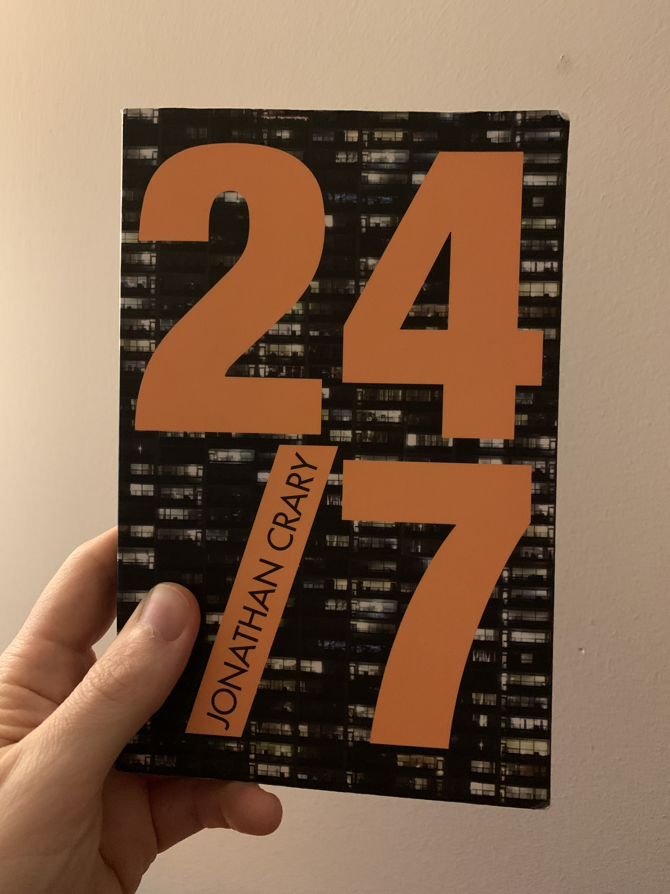
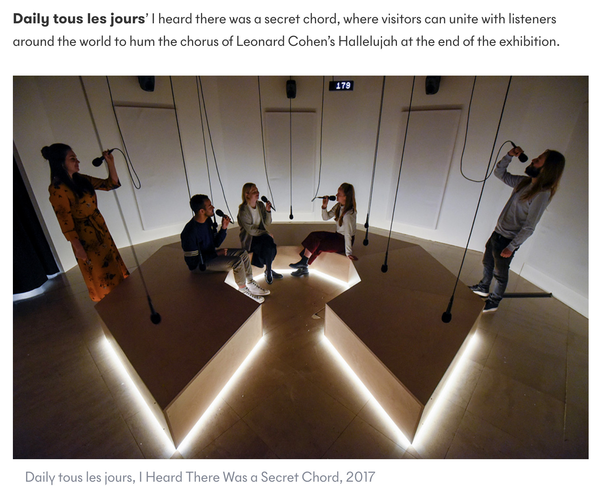

archive stuff, and keep track of things.
Back to Blog | Gary-Martin
24/7 |
|---|
|
Early on into my research I started reading a book, called 24/7 by Jonathan Crary. It explores the non-stop nature of modern life and argues that the round-the-clock consumption and production in today’s world is a threat to sleep and disrupts millenia old perceptions of time.  In addition to reading through this, I recently attended an exhibition at Somerset House with the same name as the book ‘24/7′. The exhibition provides a multi-sensory journey through five themed zones with over 50 multi-disciplinary that made me think a lot, and entertained me even more. The works there really did hold up a mirror to our ‘always-on’ culture and it was nice to step outside of my day-to-day routine to engage, reflect and reset. I spent 4 hours in the exhibition, watching every second of every film, reading every word of every display and playing with everything I could play with. It was a really helpful visit that presented a lot of creative ways of highlighting our perceptions of time in our 24/7 culture. I noticed there weren’t many sound based works there - but it was a music installation that was my favourite piece there. I could have stayed there for hours. Playing in the room was a recording from a previous performance, of people humming the tune to ‘Hallelujah’. The sound was completely immersive, and just loud enough so that when you hummed yourself, you couldn’t really hear yourself if you weren’t comfortable with that. For me this really confirmed that I want to create opportunities to participate in active musical experiences. The humming was so accessible, the song is so well known. It was lush.  |